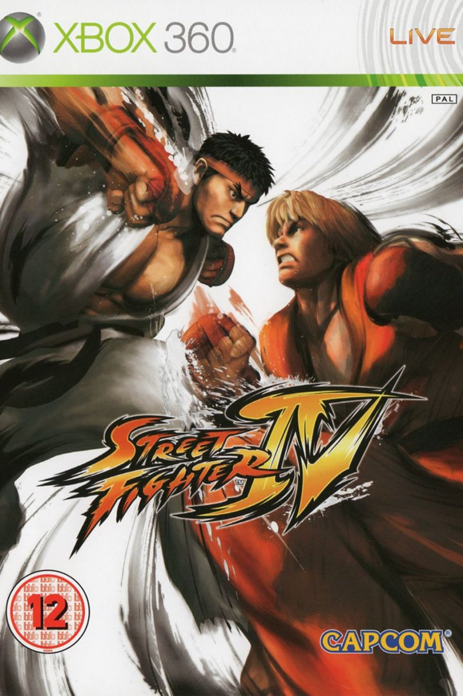

RRP: $18.99
Price you pay $9.99
Your savings $9

RRP: $18.99
Price you pay $9.99
Your savings $9
RRP: $18.99
Price you pay $9.99
Your savings $9

RRP: $18.99
Price you pay $9.99
Your savings $9
10 PS1 Games That Got Remakes (& What They Were Released For)
BY TRISTAN JURKOVICH
PUBLISHED MAY 01, 2021
The PS1 was a treasure-trove of classic games that are still enjoyable to this day. These titles all got remakes years later, much to fans' delight.
The PS1 has been getting a lot of love lately which all seems to date back to 2017. Ever since that year one, if not more, remakes released each year across multiple platforms. Last year saw three big ones so what does 2021 have in store? E3 is just around the corner so a surprise announcement or two could get the PlayStation fans riled up.
RELATED:
PS1: 10 Games You Never Knew Were Ported To The Classic PlayStation
Could Mega Man Legends or Final Fantasy Tactics come back in a big way? Only time will tell but for now, let’s go through some of the bigger PS1 remakes that have released so far. The following dates listed are for the North American launches unless otherwise noted.
10
Final Fantasy VII
FF7 Remake gameplay screenshot
Final Fantasy VII originally released for the PS1 in 1997. It was later released as Final Fantasy VII Remake for the PS4 in 2020. This is not a complete remake which makes it different from other games on the list in that it is only part one. That said it’s also one of the biggest projects of all time that both remade sections of the original while creating its own separate universe which to get into more would be a spoiler.
9
Dragon Quest VII: Fragments Of The Forgotten Past
Dragon Quest VII promo art
Dragon Quest VII: Fragments of the Forgotten Past originally released for the PS1 in 2001. It was later released for the 3DS in 2013 in Japan, but not until 2016 for North America. This was made during a time when it was seemingly impossible to get Dragon Quest games in the West. It may have been a little too late, but it was still much appreciated and is a better game than the original.
8
Resident Evil 3: Nemesis
RE3 Remake gameplay screenshot
Resident Evil 3: Nemesis originally released for the PS1 in 1999. It was later released as just Resident Evil 3 for the PS4, Xbox One, and PC in 2020. That’s the latest remake but this trend started with the first game going to GameCube in 2002. Plus a couple years before this, Resident Evil 2 came out in 2018 for PS4, Xbox One, and PC. There are rumors about Resident Evil 4 being next although that could have been about the VR port.
7
Crash Bandicoot
Crash Bandicoot N Sane Trilogy gameplay screenshot
Crash Bandicoot originally released for the PS1 in 1996. It was later released as part of the Crash Bandicoot N. Sane Trilogy for the PS4 in 2017 which collected the first three games together.
RELATED:
10 PS1 Games With The Best Storylines
It was such a hit that in 2019 Crash Team Racing got a remake as well. Plus one could say this popularity paved the way for Crash Bandicoot 4 along with several other games and collections on here.
6
Spyro The Dragon
Spyro Reignited Trilogy gameplay screenshot
Spyro the Dragon originally released for the PS1 in 1998. It was later released as part of the Spyro Reignited Trilogy for the PS4 and Xbox One in 2018 which collected the first three games. This resurgence can also be thanked to Crash Bandicoot’s collection selling well. There has been either a new game or collection since 2017 so maybe this is the year a new entry in this series will appear.
5
Metal Gear Solid
Metal Gear Solid Twin Snakes promo art
Metal Gear Solid originally released for the PS1 in 1998. It was later released as Metal Gear Solid: Twin Snakes for the GameCube in 2004. Sadly this is one of those cases where a game has remained trapped since its initial debut. Nintendo or Konami never even released it digitally on a console, making it one in dozens of other GameCube games lost to eternity despite how ambitious this was.
4
Tomb Raider
Tomb Raider Anniversary gameplay screenshot
Tomb Raider originally released for the PS1 in 1996. It was later released as Tomb Raider: Anniversary for the PS2, PC, PSP, Xbox 360, and Wii in 2007. That wasn’t the end of the porting either but the point is this game graced many consoles and thus actually has many variations to the remake. The eventual PS3 edition along with the PC and Xbox 360 versions seem to be the definitive way to experience it though.
3
Wild Arms
Wild Arms Alter Code F promo art
Wild Arms originally released for the PS1 in 1997. It was later released as Wild Arms Alter Code F for the PS2 in 2005. This was two years after Japan got it which isn’t a huge wait but significant nonetheless. The original game is a pretty basic, early PS1 RPG before Final Fantasy VII redefined everything which is funny since it was the same year. That just shows much influential Square was at the time but the overall point is this remake showed its true potential.
2
Tony Hawk's Pro Skater
Tony Hawk's Pro Skater 1+2 promo art
Tony Hawk's Pro Skater originally released for the PS1 in 1999. It was later released as Tony Hawk's Pro Skater 1+2 for the PS4, PC, and Xbox One in 2020 which added the second game as well.
RELATED:
Every PlayStation Console Ranked By Their Launch Lineups
This too could be thanked to Crash Bandicoot since it all falls under Activision’s umbrella. Alternatively to a new Spyro a further collection of these games could possibly come this year.
1
Klonoa: Door To Phantomile
Klonoa promo art
Klonoa: Door to Phantomile originally released for the PS1 in 1998. It was later released as just Klonoa for the Wii in 2009. It is basically a shot for shot remake of the original which is not a bad thing. However, many still found the PS1 version better for its charm. Either way Klonoa is a forgotten platforming series that could really use a collection or new game. A port of this remake would also suffice.